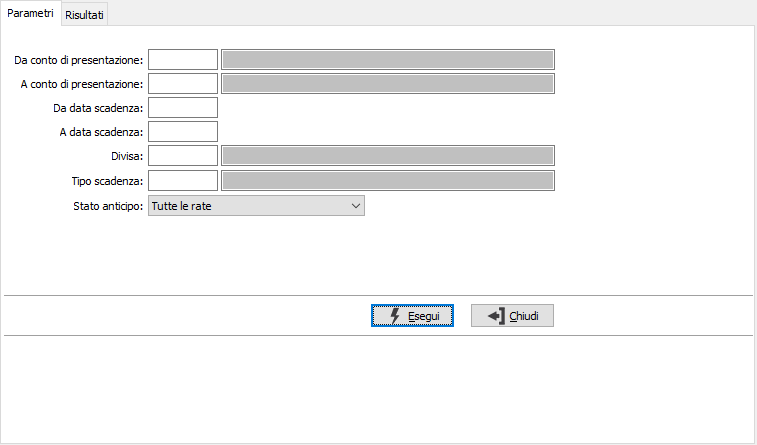
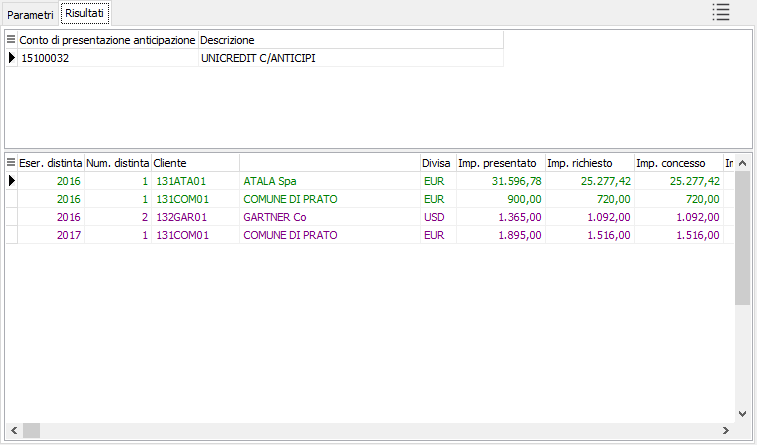

Situazione anticipi
La procedura consente di analizzare lo stato dell’anticipazione. È possibile filtrare la selezione impostando come limiti un intervallo di conto di presentazione, di data scadenza ed ancora la divisa e la tipologia movimento scadenze.
L’elenco valori “Stato anticipo” permette di selezionare:
Tutte le rate.
Da esitare: saranno selezionate tutte le rate stampate in definitivo su distinta per cui non è stata ancora effettuata l'accensione.
Da rimborsare: saranno selezionate tutte le rate presentate in distinta per cui non è stato ancora effettuato il rimborso dell'anticipo.
Respinte: saranno selezionate le rate respinte.
Rimborsate: saranno selezionate tutte le rate presentate per cui è stato effettuato il rimborso parziale / totale dell'anticipo.

Confermata la selezione nella finestra dei “Risultati” saranno mostrate due griglie: quella in alto che mostra il conto di presentazione anticipazione e la griglia sottostante dove sono riportate le informazioni relative alla distinta, al cliente, alla divisa, alla scadenza e tutti gli importi gestiti: presentato, richiesto, concesso e rimborsato. Su ciascun campo della griglia di dettaglio è possibile effettuare un ordinamento crescente tramite il click sulla colonna desiderata. In alto a destra della finestra è presente un pulsante che mostra la legenda dei possibili colori che saranno attribuiti alle righe della griglia.
È possibile, tramite gli appositi pulsanti della toolbar, effettuare l’anteprima e la stampa del risultato dell’analisi.
